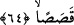

MÛSÂ VE GENÇ ADAM
60. Bir vakit Mûsâ genç adamına demişti ki: “Durup dinlenmeyeceğim; tâ iki
denizin birleştiği yere kadar varacağım, yahut senelerce yürüyeceğim.”
61. Her ikisi, iki denizin birleştiği yere varınca balıklarını unuttular. Balık,
denizde bir yol tutup gitmişti.
62. (Buluşma yerlerini) geçip gittiklerinde Mûsâ genç adamına: Kuşluk
yemeğimizi getir bize. Hakîkaten şu yolculuğumuz yüzünden başımıza (epeyce)
sıkıntı geldi, dedi.
63. (Genç adam:) Gördün mü! dedi, kayaya sığındığımız sırada balığı unuttum.
Onu hatırlamamı bana şeytandan başkası unutturmadı. O, şaşılacak bir şekilde
denizde yolunu tutup gitmişti.
64. Mûsâ: İşte aradığımız o idi, dedi. Hemen izlerinin üzerine geri döndüler.
Rivâyet edildiğine göre Kıptîlerin helâk olmasından sonra Mûsâ (a.s.),
İsrailoğulları’yla beraber Mısır’a hâkim olunca Allah Teâlâ ona, Allah’ın nîmetlerini
kavmine hatırlatmasını emretti. Mûsâ (a.s.) da kalpleri ürperten, gözleri yaşartan beliğ
bir hutbe okudu. Orada bulunan İsrailoğulları’nın âlimlerinden biri: “Ey Mûsâ! En çok
bilen kimdir?” diye sordu. O da: “Benim” cevâbını verdi. Bunun üzerine Allah Teâlâ
Mûsâ (a.s.)’a itâb etti. Çünkü ilmi Allah Teâlâ’ya havâle etmedi. Allah ona: “İki
denizin birleştiği yerde olan kulum senden daha âlimdir” diye vahyetti. O ise Hızır
(a.s.)’dır. Mûsâ (a.s.)’dan önce âdil ve akıllı bir kral olan Efridûn zamanında, büyük
Zülkarneyn (a.s.)’ın biraz öncesinde yaşadı. Mûsâ (a.s.)’ın zamanına kadar kaldı.
İbnü’l-Esîr’in Târih’inde kaydettiğine göre o, Keştasef b. Lehrâseb zamanında
gönderilmişti.
Mûsâ (a.s.): “Ya Rabbi! O’nu nerede arayayım? Onu bulmak ve onunla bir araya
gelmek nasıl mümkün olur?” dedi. Allah Teâlâ: “O’nu deniz sâhilindeki büyük taşın